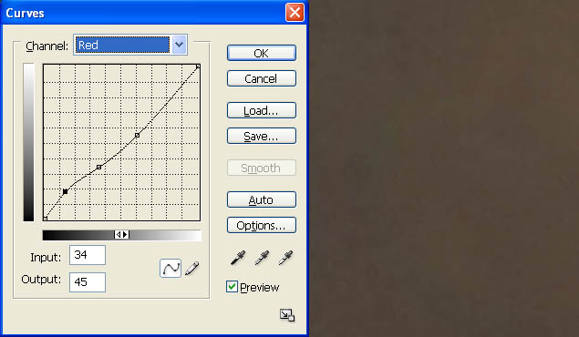
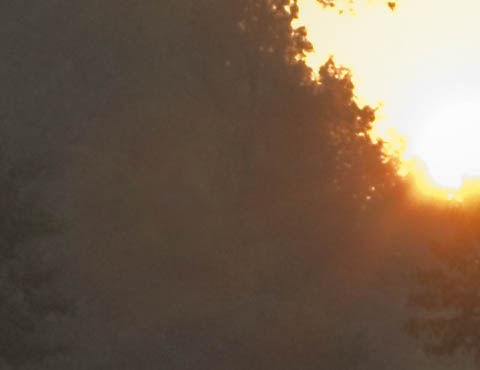
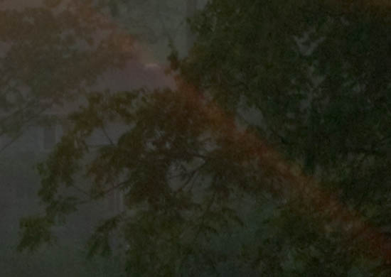
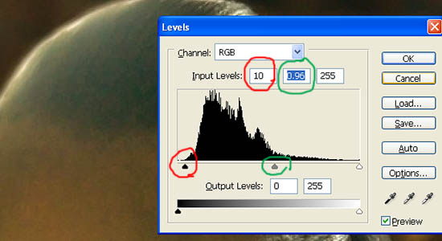
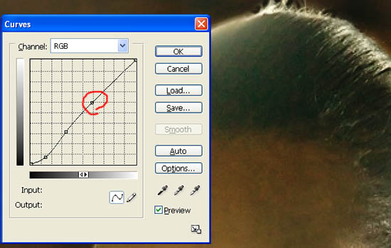
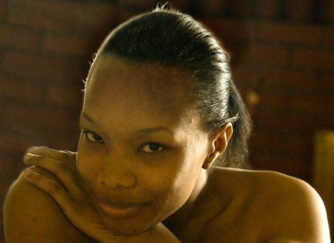

|
Removing Lens Flare in PhotoshopVersion 1.0, © 2008 by Dale Cotton, all rights reserved
Fig. 1: Lens flare (click to download full size version) When a bright light source such as the sun shines directly into a camera lens, flare and flare artifacts are often formed, such as the red doughnut near the centre of Fig. 1. For decades slide film shooters had to either forego such a shot or toss it; now in the digital era we have other options. The easiest way to remove the red donut in Fig. 1 is to do a bit of cloning from a neighbouring area. In many cases, however, there is no similar area to clone from, so we'll go through the exercise of removing the red doughnut to learn the technique: Example 1 &ndash red doughnutTo follow along: right click on Fig. 1, download the full scale image, then open it in Photoshop (most any version will do):
Fig. 2: Lasso offending object 1. Lasso flare object then feather slightly.
Fig. 2: Lasso offending object 2. Open Curves dialogue, choose closest matching colour channel, then create a curve that comes closest to removing flare colour. 3. Still in the Curves dialogue, go back to RGB channel and create curve that cancels as much of any brightness or darkness difference between the flare artifact and the surrounding area.
Fig. 3: After History Brush work (greenish area upper right is gone) 4. Use history brush at low opacity to undo any area that goes too far.
Fig. 4: Select any remaining problem areas  Fig. 5: Create new adjustment curve Repeat steps 1 through 4 for any areas not fully fixed by first iteration.  Fig. 6: Final result Example 2 &ndash sun ray Fig. 7: Ray obscuring branches (detail from Fig. 1) Another example of flare artifacting in Fig. 1 are the rays rediating from the rising sun. I don't consider them offensive, but we'll remove a segment of one to show that this technique works just as well in areas in which detail exists but has been obscured.
Fig. 8: Lasso problem area 1. Lasso the offending flare area, then feather a small amount, such as 5 pixels.
Fig. 9: Neutralize with red channel curve 2. Use the same procedure as in steps 2 - 4 above.
Fig. 10: Final result Example 3 &ndash skin and hair
Fig. 11: Flare on skin and hair (click for full size version) A friend took a shot she wants to use but is stymied by the offending lens flare. Fig. 11 is a crop from the full frame containing the problem area (and so, regrettably, you'll never know just what state of dishabile the strapless young lady is actually in ;). We can see that something more than the above techniques will be needed, because texture in the hair on the left has been lost. Note: you'll want to live at 200% mag. while following these steps:
Fig. 12: Select problem area 1. Select the flared area, leaving some margin all around. There's no clear point where the flare begins and ends on the forehead, so just about any selection you make therre will do. Feather about 20 pixels.  Fig. 12: Clip unused darks 2. Open the Levels dialogue, and clip the unused portion of the histogram to the left (red circled slider in Fig. 13). Adjust the mid point slider (green circled slider) slightly to compensate for the overall darkening this produces.  Fig. 13: Apply curve 3. Use the Curves dialogue (normal RGB channel), to recover as much darkness in the hair as possible – essentially the middle and middle right – while leaving the middle-toned forehead unchanged. (Click on the forehead to find where it falls on the histogram (red circle in Fig. 14), then create a lock point there.) Click OK to apply; you may want to save the current selection in case you need it later.
Fig. 14: Desaturate yellow channel 4. Notice that this multi-point curve has reddened the forehead. Deselect the previous selection, circle the reddened area, and feather. Open the Hue/Sat./Lum. dialogue, switch to the Yellow "channel", then desaturate to taste. This leaves us with everything done but the hard part – regaining the contrast and detail in the flared hair region. The information is not there, so it will have to be invented. We could simply clone from the middle of the hair on to the flared area on the left, but the angle the hairs travel from forehead to crown changes too much. No problem; Photoshop to the rescue, as always.
Fig. 15: Select area to work from in following steps 5. Deselect from step 4, then select a non-flared portion of hair (no feather), centre-right. Press Ctrl+C to copy; Ctrl+D to deselect; Ctrl+N to create a new window; Ctrl+V to paste.
Fig. 16: New image of hair selection after rotation 6. Open Image->Rotate->Arbitrary, then set an angle to rotate the section of hair so it more closely matches the angle of the flared hair in the original. I find 30 degrees counter-clockwise to be about right. 7. Press Ctrl+A to select all, then switch to the original image, then press Ctrl+V to paste; this creates a new layer. Use the Move tool to locate the rotated patch of hair to the side of the flared patch.
Fig. 17: Rotated hair as new layer for cloning 8. Switch to the rubber stamp tool, then clone from the rotated patch (red arrow) to the flared patch (green arrow). You are working on the new layer so you don't need to worry too much about the hairline. 9. When done, select the rotated patch of hair, then press the Delete key to delete it. Now use the Erase tool at low opacity (around 20) to work around the hairline to blend in the new hair with the old. You can hide the new layer at any time to refresh your memory of exactly where the hairline is.
Fig. 18: Face selected for contrast change 10. Now that the hair is normal, we can see that in fact the contrast of the entire face is lower than it should be. Working on the background layer, create a rough selection around the face; feather about 20; then apply a curve like the one in Fig. 18, that locks the middle and top, then dips the bottom for contrast in the darker areas. If needed, follow with a yellow channel desaturate.  Fig. 19: Final version Voilá! That's it. You can flatten the two layers or not, depending on your degree of editing paranoia ... But wait! What about the dark halo around the subject's head? Is this part of the scene or some sort of reverse flare? Either way, you should be able to eliminate it now quite handily – you know the drill... :) If you think about it, this is a very powerful technique. A tailor, needing to patch a hole in a pair of pants, will scrounge around in his coveted collection of scraps for as close a match as possible to the fabric of the pants. If we have a section of an image to repair, do we have a source portion form the same image to work from? If no, do we have one in another shot from the same session? If no, can we find one in any image available what so ever? If what we find is the wrong size, we resample; if the wrong angle we rotate; if the wrong colour we use Replace Color or the Curves channels or whatever to change the colour – and so on.
|